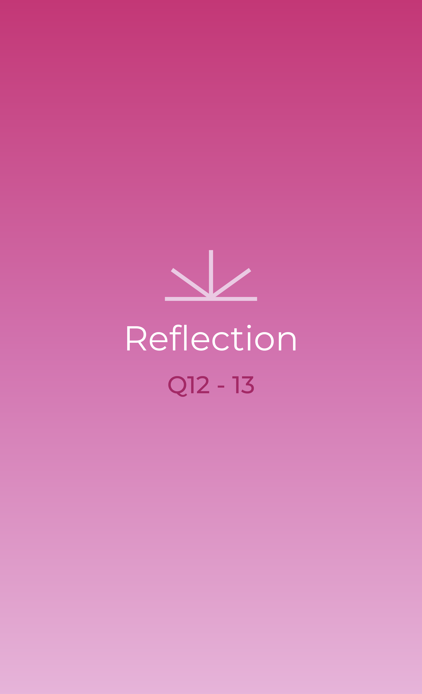

I think the part where you need to reduce the size of the browser is a bit frustrating. I tested on my iPad, and I need to turn on the Multitasking function to be able to reduce the size. And when I first opened it on my laptop, it took me a bit of time to understand the meaning behind that.
I think the reason why is that there are no instructions at the start, but reasonable because it’s a self-interactive experience; also, for aesthetic purposes, so I think the artist wants you to explore it and be amazed (I approved it!).
The part I find most satisfying is being able to press and hold the screen to hear the realistic sounds of the scene.
It’s so satisfying because it’s the most effective way to make the experience feel immersive and familiar. You really get the sense of being in the moment, which is relaxing. The sounds themselves are chill and ambient, making the whole interaction even more enjoyable.